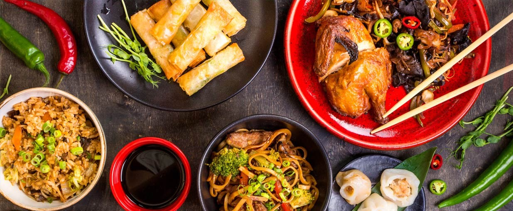
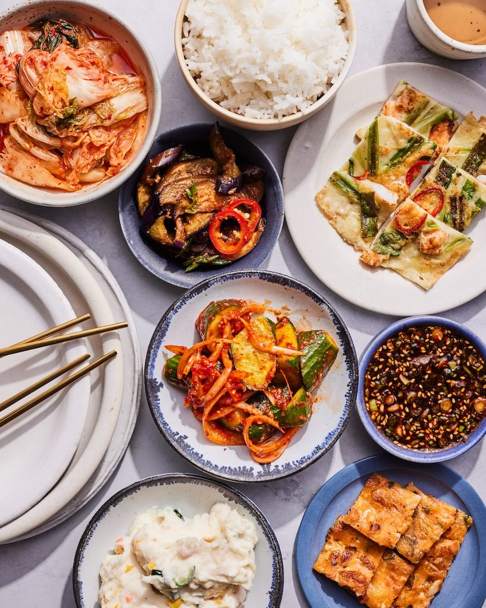
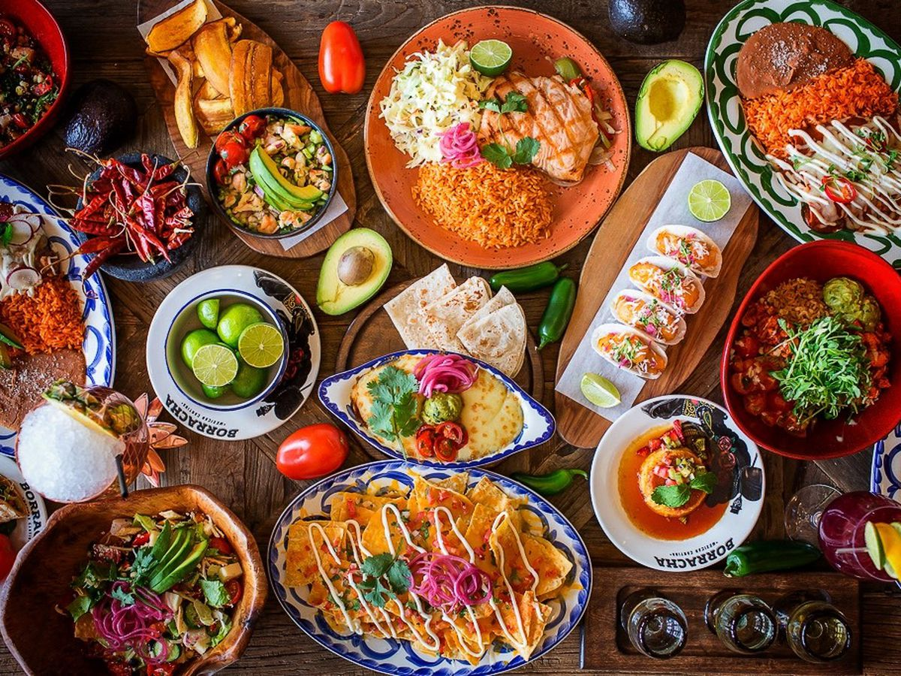
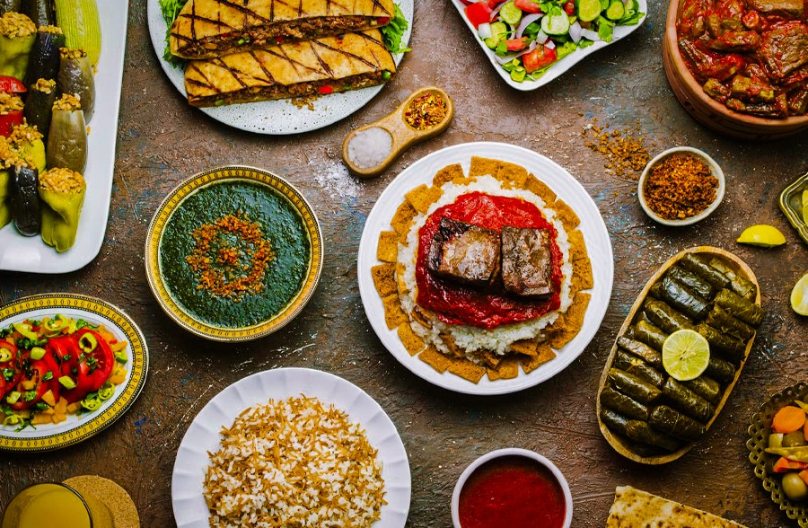

Dragon Wok
Cuisine: Asian Fusion
Signature Dish: Teriyaki Chicken Stir-Fry — $18
Deposit: $20
Average Price: $20–$35 per person
Dragon Wok is a bright, modern Asian fusion restaurant known for quick service and bold flavours. Their menu blends classic stir‑fries, rice bowls, and street‑food favourites with a fresh, contemporary twist. The signature Teriyaki Chicken Stir‑Fry is a customer favourite, offering a perfect balance of sweet and savoury. With its casual atmosphere and fast service, Dragon Wok is ideal for students, families, and anyone craving a warm, flavour‑packed meal without the wait.
Reserve Now
Golden Saffron House
Cuisine: Indian / Middle Eastern
Signature Dish: Butter Chicken with Saffron Rice — $22
Deposit: $15
Average Price: $20–$40 per person
Golden Saffron House blends Indian and Middle Eastern comfort dishes into one warm, aromatic dining experience. The restaurant is known for its rich curries, charcoal‑grilled meats, and fragrant saffron rice. Their signature Butter Chicken is creamy, mildly spiced, and served with freshly baked naan. The cosy interior and friendly staff make it a great choice for group dinners or relaxed nights out. With generous portions and bold flavours, Golden Saffron House is a favourite for anyone who loves hearty, comforting meals.
Reserve Now
Marinara & Co.
Cuisine: Italian
Signature Dish: Seafood Marinara Pasta — $24
Deposit: $25
Average Price: $30–$45 per person
Marinara & Co. brings the flavours of Italy’s coastline to Melbourne with fresh pasta, wood fired pizzas, and seafood‑inspired dishes. Their signature Seafood Marinara Pasta features prawns, mussels, and calamari tossed in a rich tomato and garlic sauce. The restaurant has a relaxed, beach side feel with soft lighting and rustic décor. It’s a great spot for families, date nights, or anyone who loves simple Italian food made with fresh ingredients and a modern twist.
Reserve Now
K-Grill
Cuisine: Korean BBQ
Signature Dish: BBQ Beef Set (for 2) — $35
Deposit: $30
Average Price: $35–$55 per person
K‑Grill offers a lively Korean BBQ experience where guests cook marinated meats right at their table. The signature BBQ Beef Set includes premium cuts, fresh vegetables, and a selection of classic Korean side dishes. The atmosphere is energetic and social, making it perfect for groups and celebrations. Staff are always ready to help first‑timers with the grill. With generous servings and bold flavours, K‑Grill delivers an authentic and memorable dining experience.
Reserve Now
Luna Lucha Cantina
Cuisine: Mexican
Signature Dish: Beef Tacos (3 pcs) — $16
Deposit: $10
Average Price: $20–$30 per person
Luna Lucha Cantina is a colourful, upbeat Mexican eatery serving tacos, burritos, nachos, and refreshing mocktails. Their signature Beef Tacos are packed with seasoned beef, fresh salsa, and lime crema. The restaurant has a fun, street‑food vibe with bright décor and lively music. It’s a popular choice for casual dinners, group outings, and late‑night cravings. With generous portions and bold flavours, Luna Lucha brings a taste of Mexico to the heart of Melbourne.
Reserve Now
Nile & Stone
Cuisine: Egyptian
Signature Dish: Mixed Grill Plate — $27
Deposit: $20
Average Price: $25–$40 per person
Nile & Stone offers authentic Egyptian street‑food flavours with a modern twist. Their signature Mixed Grill Plate includes charcoal‑grilled chicken, kofta, and lamb served with warm flatbread and tahini. The restaurant features earthy tones, traditional patterns, and soft lighting inspired by Egyptian design. It’s a cosy, welcoming space perfect for relaxed dinners or trying something new. With rich spices and generous servings, Nile & Stone delivers a unique dining experience that stands out from typical Mediterranean options.
Reserve Now